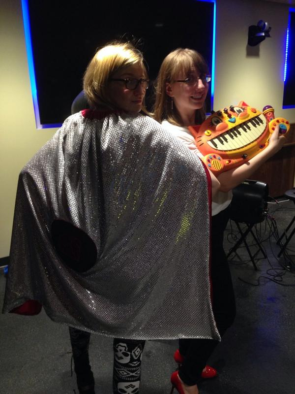

  	<div class="flex-wrap">
      
  	  <article class="tweet  " id="main">
  	    <p class="full_text">
  	      . @TheDoubleclicks + The Ruby cape == Awesome! <a href="http://empirecapes.com">http://empirecapes.com</a> to get your own. <div class="gallery"><ul><li><a href="../../tweets_media/499075004646965248-Bu0SEjUCEAE6t1G.jpg"></a></li></ul></div>
  	    </p>
  	    <p class="created_at">
  	      8/11/2014, 11:08:48 PM
  	    </p>
  	    <p class="favorite_count">Favs: 1</p>
  	    <p class="retweet_count">Retweets: 0</p>
  	    <a class="permalink" href="../499075004646965248">link</a>
  	  </article>

  	</div>
  </div>
